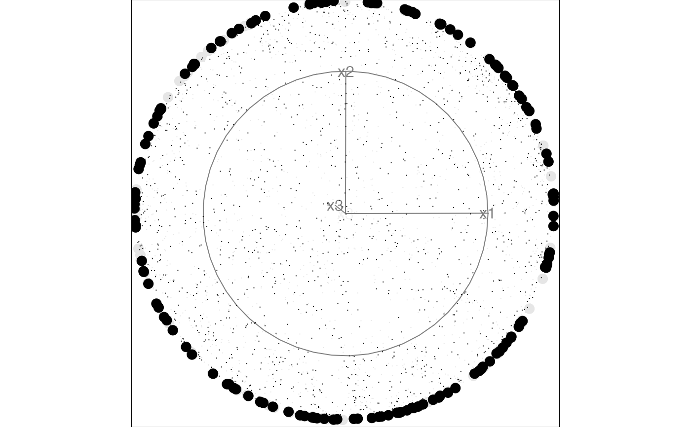
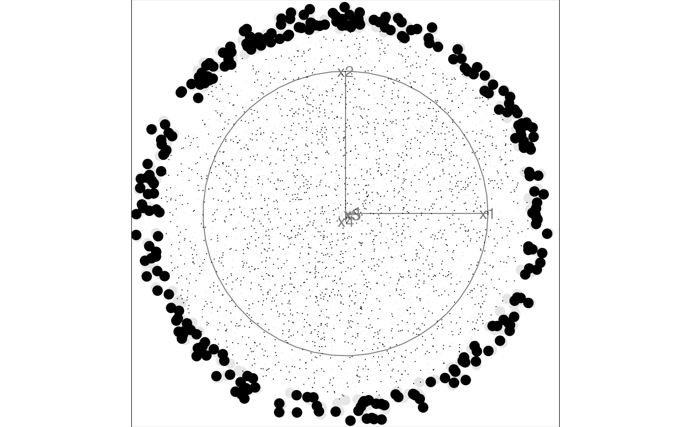
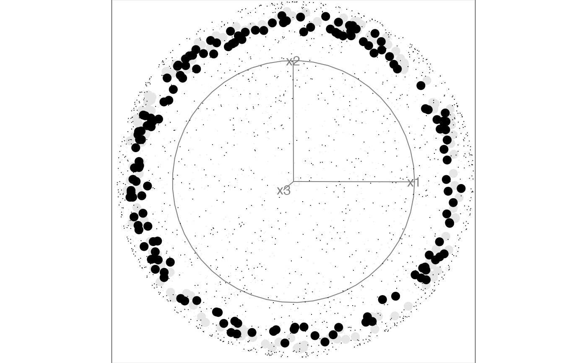
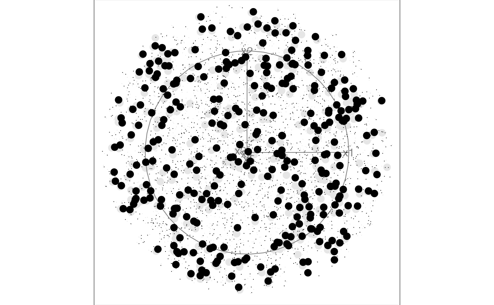

Animate a 2D tour path with a sliced scatterplot.
display_slice(
center = TRUE,
axes = "center",
half_range = NULL,
col = "black",
pch_slice = 20,
pch_other = 46,
cex_slice = 2,
cex_other = 1,
v_rel = NULL,
anchor = NULL,
anchor_nav = "off",
edges = NULL,
edges.col = "black",
...
)
animate_slice(data, tour_path = grand_tour(), rescale = TRUE, ...)if TRUE, centers projected data to (0,0). This pins the center of data cloud and make it easier to focus on the changing shape rather than position.
position of the axes: center, bottomleft or off
half range to use when calculating limits of projected. If not set, defaults to maximum distance from origin to each row of data.
color to be plotted. Defaults to "black"
marker for plotting points inside the slice. Defaults to 20.
marker for plotting points outside the slice. Defaults to 46.
size of the points inside the slice. Defaults to 2.
size if the points outside the slice. Defaults to 1.
relative volume of the slice. If not set, suggested value is calculated and printed to the screen.
A vector specifying the reference point to anchor the slice. If NULL (default) the slice will be anchored at the data center.
position of the anchor: center, topright or off
A two column integer matrix giving indices of ends of lines.
colour of edges to be plotted, Defaults to "black.
other arguments passed on to animate and
display_slice
matrix, or data frame containing numeric columns
tour path generator, defaults to 2d grand tour
if true, rescale all variables to range [0,1].
# Generate samples on a 3d and 5d hollow sphere using the geozoo package
sphere3 <- geozoo::sphere.hollow(3)$points
sphere5 <- geozoo::sphere.hollow(5)$points
# Columns need to be named before launching the tour
colnames(sphere3) <- c("x1", "x2", "x3")
colnames(sphere5) <- c("x1", "x2", "x3", "x4", "x5")
# Animate with the slice display using the default parameters
animate_slice(sphere3)
#> Using half_range 0.52
#> Using v_rel=0.052, corresponding to a cutoff h=0.052

animate_slice(sphere5)
#> Using half_range 0.53
#> Using v_rel=0.015, corresponding to a cutoff h=0.24

# Animate with off-center anchoring
anchor3 <- matrix(rep(0.7, 3), ncol=3)
anchor5 <- matrix(rep(0.3, 5), ncol=5)
animate_slice(sphere3, anchor = anchor3)
#> Using half_range 0.52
#> Using v_rel=0.052, corresponding to a cutoff h=0.052

# Animate with thicker slice to capture more points in each view
animate_slice(sphere5, anchor = anchor5, v_rel = 0.02)
#> Using half_range 0.53
#> Using v_rel=0.02, corresponding to a cutoff h=0.27
